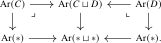

Agda links are temporarily unavailable for Chapters 2 and 3 while their code is updated to the foundations used in Chapter 1.
2.5 Recognizing animae
Animae enter the foundational language primitively as homotopy-coherent collections, whereas the groupoid condition is a property of a category expressed by invertibility of its morphisms. The two notions enter the theory independently. The following axiom asserts that they determine the same class of categories, allowing us to pass between collection-oriented anima language and structural groupoid arguments.
Proposition 2.5.1. For any anima \(X\) and any category \(A\), the canonical functor \[ \imath _{A,X}\colon \Map (A,X)\iso \Fun (A,X) \] is an equivalence.
Proof
Lemma 2.5.2. For functors \(X\to C\) and \(Y\to C\) with \(X\) and \(Y\) animae, the pullback \(X\times _C Y\) is an anima.
Proof
Proof. This follows from Lemma 2.4.9 and the groupoid recognition axiom. □
Corollary 2.5.3. Let \(C\) be a category. Then the functor \(\imath _C\colon C^{\simeq } \to C\) is an embedding.
Proof
Proof. We need to show that the diagonal \(C^{\simeq } \to C^{\simeq } \times _C C^{\simeq }\) is an equivalence. Its source is an anima, and its target is an anima by Lemma 2.5.2. By Proposition 1.4.11, it therefore suffices to show that for every anima \(Z\) the induced map \[ \Map (Z,C^{\simeq }) \to \Map (Z,C^{\simeq } \times _C C^{\simeq }) \simeq \Map (Z,C^{\simeq }) \times _{\Map (Z,C)} \Map (Z,C^{\simeq }) \] is an equivalence, i.e. we need to show that the map \(\Map (Z,C^{\simeq }) \to \Map (Z,C)\) is an embedding. But this map is even an equivalence by Corollary 1.4.13. □
Lemma 2.5.4. For any two categories \(C\) and \(D\), the canonical map \[ \Ar (C) \sqcup \Ar (D) \to \Ar (C \sqcup D) \] is an equivalence.
Proof
Proof. When \(C = * = D\), we have \(\Ar (*) \simeq *\) and the statement says that the map \(* \sqcup * \to \Ar (* \sqcup *)\) is an equivalence. Since \(*\sqcup *\) is an anima, it is a groupoid by the recognition axiom. The claim follows, since for a groupoid \(X\) the functor \(X \to \Ar (X)\) is an equivalence. For arbitrary \(C\) and \(D\), it follows from Lemma 1.7.11 that there are pullback squares

The claim thus follows from Lemma 1.6.16. □
Corollary 2.5.5. Let \(X\) and \(Y\) be groupoids. Then their disjoint union \(X \sqcup Y\) is a groupoid.
Proof
Proof. The map \(X \sqcup Y \to \Ar (X \sqcup Y)\) factors as \[ X \sqcup Y \to \Ar (X) \sqcup \Ar (Y) \to \Ar (X \sqcup Y), \] where the first map is the disjoint union of the two equivalences \(X \iso \Ar (X)\) and \(Y \iso \Ar (Y)\), while the second is the equivalence from Lemma 2.5.4. □
Corollary 2.5.6. The empty category \(\emptyset \) is an anima. For animae \(X\) and \(Y\), the coproduct \(X\sqcup Y\) is an anima.
Proof
Supplementary notes
- Constant diagrams and the exponential law AI-generated